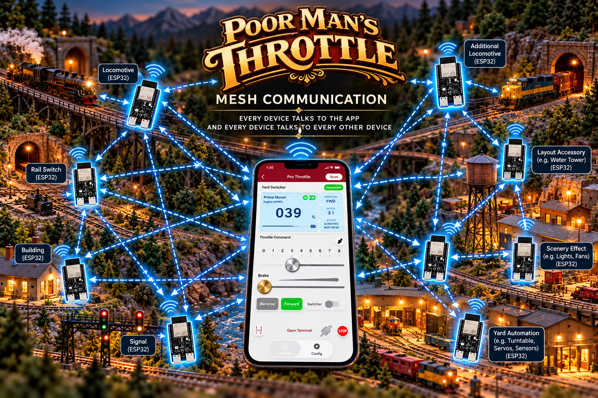

Layout parts can now react to each other
A trigger from one ESP32 can cause something useful to happen somewhere else on the railroad. A sensor, switch, accessory, locomotive, signal, or automation node can all become part of the same conversation.
PMT already lets the app and physical devices control different parts of the railroad. Now those parts can talk to each other too. That means actions from one device can trigger actions on another device, unlocking a smarter, more connected, more automated layout.

This is the leap forward. PMT is not only controlling devices individually anymore. With mesh networking, devices across the layout can exchange information and work together.
A trigger from one ESP32 can cause something useful to happen somewhere else on the railroad. A sensor, switch, accessory, locomotive, signal, or automation node can all become part of the same conversation.
Instead of isolated devices doing isolated jobs, PMT creates a connected network where different pieces of the layout can cooperate in ways that feel powerful, fluid, and much more intelligent.
The value of mesh is not abstract. It creates real operating possibilities that make layouts feel more alive and more responsive.
A locomotive event can trigger a light. A physical throttle input can fire a sound. An automation node can flip a turnout, start an effect, or coordinate multiple actions at once.
You are no longer thinking in terms of one ESP32 doing one isolated thing. You can think in terms of the entire layout working together.
When devices can react to each other, the railroad starts to behave like a coordinated system instead of a collection of separate gadgets.
This capability is not off to the side. It is fully supported where PMT users already work and operate.
Mesh behavior is fully supported in PMT automation recording and in scripts, so you can capture, define, and replay coordinated layout behavior without having to treat each device as a lonely island.
Trigger mesh actions from the PMT app or from physical throttle hardware. Whether you operate from the screen or from real controls, the networked behavior is right there with you.
The story keeps getting better. This same technology opens the door for PMT repeaters.
Repeaters will help carry control into deep tunnels, under rockwork, and into the tougher parts of a large railroad where signal coverage can be more challenging.
Repeaters will also help stretch PMT across larger layouts, making it easier to keep your railroad responsive as the physical footprint grows.
PMT keeps moving beyond simple throttle control. First the app controlled trains and layout devices. Then physical controls expanded how you interact. Now the devices themselves can collaborate.
Add locomotives, switches, signals, accessories, effects, sensors, and automation nodes across the layout.
Have one event on the railroad cause another response somewhere else, instead of controlling every piece in isolation.
Use automation recording and scripts to create behaviors that feel layout-wide instead of local and disconnected.
Take advantage of a technology foundation that is ready for repeaters, larger layouts, and even more coordinated features to come.